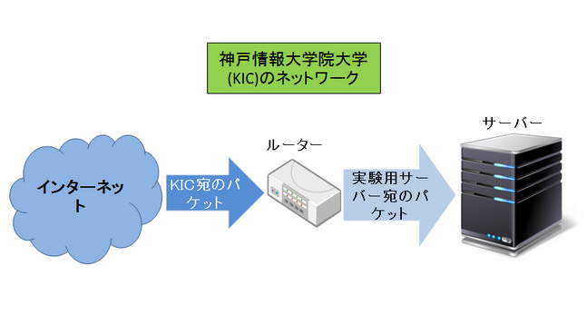
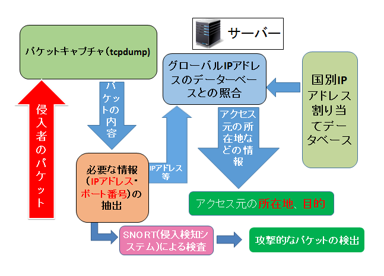

嶋研 プロジェクト /Shima-Lab Project

ハッキング監視
グローバルIPに繋がったコンピュータへのアクセスを観察
目的・背景
皆さんはパケットキャプチャという技術をご存知でしょうか？パケットというのは文字としてのデータを単位ごとに分割したもののことであり、我々の普段の通信（列挙してもよい）は概ねこのパケットを転送することで成立しています。
パケットキャプチャというのはコンピュータネットワークに流れるパケットのうち、送信者・受信者のＩＰアドレスなどの重要な情報を知ることができる技術のことです。主にネットワークの状態を確認する目的で用いられるこの技術ですが、悪意のある人間が横からパケットを覗いて悪用する危険性もあります。
今回の実験ではこのパケットキャプチャの技術を用いて外部のインターネットの世界から我々のサーバマシンにどのような人間がアクセスをしようとしているのかを視覚化して皆さんにお見せすることで、現在のインターネットの世界に内在する危険を直に感じていただこうと思います。
実験システム構成

ソフトウェア構成

解析内容
- パケットはどこから来ている？
- どんなパケットがきている？
- パケットが何をしようとしている？
インターネットは世界各国あらゆる所に繋がっています。これに接続していれば必ずといっていいほど知らない人からパケットが飛んできます。パケットには宛先の他に送り主の情報も書かれているので、調べてみるとどこの国 から飛んできたのかを知ることができます。時には地球の裏側からこの大学院に飛んで きたりします。
パケットを解析ソフトで見てみると様々な情報が分かります。目的は様々です。過去に実験用サーバに飛んで来た例を挙げますと、 大学の勉強の一貫でIPアドレスを調べるために送ってきたり、時には不正アクセスする ために送られてきたこともありました。
パケットにはポート番号とよばれる通信先のプログラムを特定する番号の情報が含まれて います。この情報からどんな目的でパケットを送ってきているかが解ります。